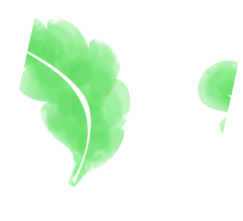

「用餐點改變生命，
讓愛持續被看見。」
「Pawject Bowl」 是一間結合健康餐飲與狗狗中途之家理念的複合式餐廳，我們相信，美好的生活，從一頓用心的餐食開始，也能從一次溫柔的陪伴延續。


「Pawject Bowl」 是一間結合健康餐飲與狗狗中途之家理念的複合式餐廳，我們相信，美好的生活，從一頓用心的餐食開始，也能從一次溫柔的陪伴延續。


我們總在尋找一種剛剛好的生活方式：吃得健康但不麻煩、對動物友善但不沉重、有理念但不失日常的溫柔感。
我們是一間結合健康輕食與狗狗中途之家概念的複合式餐廳。你可以在這裡吃到減脂又不失美味的高蛋白便當，也能來一碗有飽足感的沙拉，甚至是讓你拍完照才捨得動筷的狗狗友善共食碗...
我們也默默做著一件我們自己很在乎的事——讓更多被遺棄或等待中的毛孩，有機會重新被看見。你可能在餐廳角落看到一隻舒服趴著的狗狗... 我們不會強迫你認養，也不會讓用餐變得像上課。但我們相信，一段有緣份的關係，往往就發生在最自然的日常中... 我們知道，願意踏進這樣一家店的你，可能也正在努力吃得更健康、讓生活過得更簡單舒服。所以我們不只做出好吃的東西，也設計了一個能讓人放鬆的空間...
你不需要多做什麼，光是走進來、點一份便當、看一眼狗狗的笑容，也許你已經成為改變牠命運的那個人了。